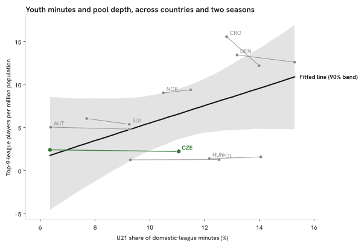

Summary · Question 4 of 14
The path abroad
These pages follow a player from youth minutes at home to the move abroad and the playing time after it.
Share of home-league minutes played by own under-21 nationals, 2025/26
Own under-21 nationals played 6.4 % of the Czech First League’s minutes; the highest share among the peers is Denmark’s 15.3 %.
Across 8 countries (country means over two seasons), ten points more under-21 share go with +10.11 more top-9 players per million (90 % HDI −1.69 to 23.26, R² = 0.27). Within countries, from one season to the next, the estimate is −0.16 (90 % HDI −2.53 to 2.17), n = 16 country-seasons. The share is measured; its association with the per-head count is not settled.
How to read it: one bar per country’s top flight, the share of its minutes played by its own nationals aged 21 or under at season start; green is Czechia. A country marked “not on FBref” has no top-flight tables on FBref.
Across countries

How we know
Across the 8 countries (country averages over both seasons), 10 points more U21 share go with +10.11 more top-9 players per million (90 % HDI −1.69 to 23.26).
As an analytics question In numbers: share of domestic-league minutes played by players aged ≤ 21 at season start, 2025/26, by country's top flight.
What we did We counted every minute played in the league and looked at how many of them went to players aged 21 or younger.
Sources Share of all league minutes played by players aged ≤ 21 at season start, 2025/26, per domestic top flight.
What this means
Under-21 nationals played 6.4 % of the Czech First League’s minutes in 2025/26 (a floor: with the rows FBref leaves without a nationality counted as own nationals it would be 7.6 %). The between-country and within-country estimates above carry wide intervals and neither is a causal estimate, so the page describes where Czechia stands on this measure; it does not show that a higher share would raise the per-head count.
What this does not show
Minutes for under-21s in lower divisions or on loan abroad, minutes for foreign under-21s, and whether any young player was ready for more minutes, which no table here measures.
Data snapshot: FBref tables fetched 14 September 2026, snapshot commit ce793f3 · code: src/pathways.py, src/youth_panel.py · status: exploratory, not pre-registered · all limitations
How the youth share compares across the editions, and what it weighs →